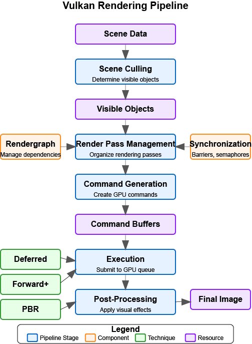

Engine Architecture: Rendering Pipeline
Rendering Pipeline
A well-designed rendering pipeline is essential for creating a flexible and efficient rendering engine. In this section, we’ll explore how to structure your rendering pipeline to support various rendering techniques and effects.
Rendering Pipeline Overview
The following diagram provides a high-level overview of a modern Vulkan rendering pipeline:

|
Diagram Legend:
|
The rendering pipeline consists of several key stages:
-
Scene Culling - Determine which objects are visible and need to be rendered.
-
Render Pass Management - Organize rendering into passes with specific purposes.
-
Command Generation - Generate commands for the GPU to execute.
-
Execution - Submit commands to the GPU for execution.
-
Post-Processing - Apply effects to the rendered image.
Supporting components like Rendergraphs help manage dependencies between render passes, while Synchronization primitives ensure correct execution order. Different rendering techniques (Deferred, Forward+, PBR) can be implemented within this pipeline architecture.
Rendering Pipeline Challenges
When designing a rendering pipeline, you’ll need to address several challenges:
-
Flexibility - Support different rendering techniques and effects.
-
Performance - Efficiently utilize the GPU and minimize state changes.
-
Extensibility - Allow for easy addition of new rendering features.
-
Maintainability - Keep the code organized and easy to understand.
-
Platform Independence - Abstract away platform-specific details.
Rendering Pipeline Architecture
Earlier we outlined the major stages of a modern pipeline. Rather than repeating that list, we’ll now dive into each stage, focusing on responsibilities, data flow, and practical implementation patterns that keep the engine flexible and performant.
Scene Culling
Before rendering, we need to determine which objects are visible to the camera. This process is called culling and can significantly improve performance by reducing the number of objects that need to be rendered.
class CullingSystem {
private:
Camera* camera;
std::vector<Entity*> visibleEntities;
public:
explicit CullingSystem(Camera* cam) : camera(cam) {}
void SetCamera(Camera* cam) {
camera = cam;
}
void CullScene(const std::vector<Entity*>& allEntities) {
visibleEntities.clear();
if (!camera) return;
// Get camera frustum
Frustum frustum = camera->GetFrustum();
// Check each entity against the frustum
for (auto entity : allEntities) {
if (!entity->IsActive()) continue;
auto meshComponent = entity->GetComponent<MeshComponent>();
if (!meshComponent) continue;
auto transformComponent = entity->GetComponent<TransformComponent>();
if (!transformComponent) continue;
// Get bounding box of the mesh
BoundingBox boundingBox = meshComponent->GetBoundingBox();
// Transform bounding box by entity transform
boundingBox.Transform(transformComponent->GetTransformMatrix());
// Check if bounding box is visible
if (frustum.Intersects(boundingBox)) {
visibleEntities.push_back(entity);
}
}
}
const std::vector<Entity*>& GetVisibleEntities() const {
return visibleEntities;
}
};Render Pass Management
Modern rendering techniques often require multiple passes, each with a specific purpose. A render pass manager helps organize these passes and their dependencies.
In this tutorial, we use Vulkan’s dynamic rendering feature with vk::raii instead of traditional render passes. Dynamic rendering simplifies the rendering process by allowing us to begin and end rendering operations with a single command, without explicitly creating VkRenderPass and VkFramebuffer objects.
Rendergraphs and Synchronization
A rendergraph is a higher-level abstraction that represents the entire rendering process as a directed acyclic graph (DAG), where nodes are render passes and edges represent dependencies between them. This approach offers several advantages over traditional render pass management:
What is a Rendergraph?
A rendergraph is a data structure that:
-
Describes Resources: Tracks all resources (textures, buffers) used in rendering.
-
Defines Operations: Specifies what operations (render passes) will be performed.
-
Manages Dependencies: Automatically determines the dependencies between operations.
-
Handles Synchronization: Automatically inserts necessary synchronization primitives.
-
Optimizes Memory: Can perform memory aliasing and other optimizations.
Rendergraph: Data Structure Architecture and Resource Representation
First, we need to establish the fundamental data structures that represent rendering resources and passes within the rendergraph system.
// A comprehensive rendergraph implementation for automated dependency management
class Rendergraph {
private:
// Resource description and management structure
// Represents Image resource used during rendering (textures)
struct Resource {
std::string name; // Human-readable identifier for debugging and referencing
vk::Format format; // Pixel format (RGBA8, Depth24Stencil8, etc.)
vk::Extent2D extent; // Dimensions in pixels for 2D resources
vk::ImageUsageFlags usage; // How this resource will be used (color attachment, texture, etc.)
vk::ImageLayout initialLayout; // Expected layout when the frame begins
vk::ImageLayout finalLayout; // Required layout when the frame ends
// Actual GPU resources - populated during compilation
vk::raii::Image image = nullptr; // The GPU image object
vk::raii::DeviceMemory memory = nullptr; // Backing memory allocation
vk::raii::ImageView view = nullptr; // Shader-accessible view of the image
};
// Render pass representation within the graph structure
// Each pass represents a distinct rendering operation with defined inputs and outputs
struct Pass {
std::string name; // Descriptive name for debugging and profiling
std::vector<std::string> inputs; // Resources this pass reads from (dependencies)
std::vector<std::string> outputs; // Resources this pass writes to (products)
std::function<void(vk::raii::CommandBuffer&)> executeFunc; // The actual rendering code
};
// Core data storage for the rendergraph system
std::unordered_map<std::string, Resource> resources; // All resources referenced in the graph
std::vector<Pass> passes; // All rendering passes in definition order
std::vector<size_t> executionOrder; // Computed optimal execution sequence
// Automatic synchronization management
// These objects ensure correct GPU execution order without manual barriers
std::vector<vk::raii::Semaphore> semaphores; // GPU synchronization primitives
std::vector<std::pair<size_t, size_t>> semaphoreSignalWaitPairs; // (signaling pass, waiting pass)
vk::raii::Device& device; // Vulkan device for resource creation
public:
explicit Rendergraph(vk::raii::Device& dev) : device(dev) {}The data structure architecture reflects the core philosophy of rendergraphs: treating rendering as a series of transformations on resources rather than imperative GPU commands. The Resource structure encapsulates everything needed to create and manage GPU resources, while the Pass structure defines rendering operations in terms of their resource dependencies rather than their implementation details.
This approach enables powerful optimizations like automatic memory aliasing (where multiple resources share the same memory if their lifetimes don’t overlap) and optimal resource layout transitions. The separation between resource description and actual GPU objects allows the rendergraph to make informed decisions about resource management during the compilation phase.
Rendergraph: Resource Registration and Pass Definition Interface
Now for the public interface for building the rendergraph by registering resources and defining rendering passes with their dependencies.
// Resource registration interface for declaring all resources used during rendering
// This method establishes resource metadata without creating actual GPU resources
void AddResource(const std::string& name, vk::Format format, vk::Extent2D extent,
vk::ImageUsageFlags usage, vk::ImageLayout initialLayout,
vk::ImageLayout finalLayout) {
Resource resource;
resource.name = name; // Store human-readable identifier
resource.format = format; // Define pixel format and bit depth
resource.extent = extent; // Set resource dimensions
resource.usage = usage; // Specify intended usage patterns
resource.initialLayout = initialLayout; // Define starting layout state
resource.finalLayout = finalLayout; // Define required ending state
resources[name] = resource; // Register in the global resource map
}
// Pass registration interface for defining rendering operations and their dependencies
// This method establishes the logical structure of rendering without immediate execution
void AddPass(const std::string& name,
const std::vector<std::string>& inputs,
const std::vector<std::string>& outputs,
std::function<void(vk::raii::CommandBuffer&)> executeFunc) {
Pass pass;
pass.name = name; // Assign descriptive identifier
pass.inputs = inputs; // List all resources this pass reads
pass.outputs = outputs; // List all resources this pass writes
pass.executeFunc = executeFunc; // Store the actual rendering implementation
passes.push_back(pass); // Add to the ordered pass list
}The registration interface enables declarative rendergraph construction where developers specify what they want to achieve rather than how to achieve it. This high-level approach allows the rendergraph to analyze the entire rendering pipeline before making resource allocation and scheduling decisions.
The deferred execution model (where passes store function objects rather than immediate GPU commands) enables powerful compile-time optimizations. The rendergraph can reorder passes, merge compatible operations, and optimize resource usage based on the complete dependency graph rather than making local decisions for each pass.
Rendergraph: Dependency Analysis and Execution Ordering
Now we implement the core algorithmic logic that analyzes pass dependencies and computes an optimal execution order for the rendering pipeline.
// Rendergraph compilation - transforms declarative descriptions into executable pipeline
// This method performs dependency analysis, resource allocation, and execution planning
void Compile() {
// Dependency Graph Construction
// Build bidirectional dependency relationships between passes
std::vector<std::vector<size_t>> dependencies(passes.size()); // What each pass depends on
std::vector<std::vector<size_t>> dependents(passes.size()); // What depends on each pass
// Track which pass produces each resource (write-after-write dependencies)
std::unordered_map<std::string, size_t> resourceWriters;
// Dependency Discovery Through Resource Usage Analysis
// Analyze each pass to determine data flow relationships
for (size_t i = 0; i < passes.size(); ++i) {
const auto& pass = passes[i];
// Process input dependencies - this pass must wait for producers
for (const auto& input : pass.inputs) {
auto it = resourceWriters.find(input);
if (it != resourceWriters.end()) {
// Found the pass that produces this input - create dependency link
dependencies[i].push_back(it->second); // This pass depends on the producer
dependents[it->second].push_back(i); // Producer has this as dependent
}
}
// Register output production - subsequent passes may depend on these
for (const auto& output : pass.outputs) {
resourceWriters[output] = i; // Record this pass as producer
}
}
// Topological Sort for Optimal Execution Order
// Use depth-first search to compute valid execution sequence while detecting cycles
std::vector<bool> visited(passes.size(), false); // Track completed nodes
std::vector<bool> inStack(passes.size(), false); // Track current recursion path
std::function<void(size_t)> visit = [&](size_t node) {
if (inStack[node]) {
// Cycle detection - circular dependency found
throw std::runtime_error("Cycle detected in rendergraph");
}
if (visited[node]) {
return; // Already processed this node and its dependencies
}
inStack[node] = true; // Mark as currently being processed
// Recursively process all dependent passes first (post-order traversal)
for (auto dependent : dependents[node]) {
visit(dependent);
}
inStack[node] = false; // Remove from current path
visited[node] = true; // Mark as completely processed
executionOrder.push_back(node); // Add to execution sequence
};
// Process all unvisited nodes to handle disconnected graph components
for (size_t i = 0; i < passes.size(); ++i) {
if (!visited[i]) {
visit(i);
}
}The dependency analysis represents the mathematical core of the rendergraph system, transforming an abstract description of rendering operations into a concrete execution plan. The bidirectional dependency tracking enables efficient graph traversal algorithms and provides the information needed for automatic synchronization.
The topological sort algorithm ensures that passes execute in dependency order while detecting impossible circular dependencies that would represent logical errors in the rendering pipeline design. This compile-time validation catches many common rendering pipeline bugs before they manifest as runtime GPU synchronization issues.
Rendergraph: Automatic Synchronization and Resource Allocation
Next create the GPU synchronization objects needed for correct execution ordering and allocate the actual Vulkan resources for all registered resources.
// Automatic Synchronization Object Creation
// Generate semaphores for all dependencies identified during analysis
for (size_t i = 0; i < passes.size(); ++i) {
for (auto dep : dependencies[i]) {
// Create a GPU semaphore for this dependency relationship
// The dependent pass will wait on this semaphore before executing
semaphores.emplace_back(device.createSemaphore({}));
semaphoreSignalWaitPairs.emplace_back(dep, i); // (producer, consumer) pair
}
}
// Physical Resource Allocation and Creation
// Transform resource descriptions into actual GPU objects
for (auto& [name, resource] : resources) {
// Configure image creation parameters based on resource description
vk::ImageCreateInfo imageInfo;
imageInfo.setImageType(vk::ImageType::e2D) // 2D texture/render target
.setFormat(resource.format) // Pixel format from description
.setExtent({resource.extent.width, resource.extent.height, 1}) // Dimensions
.setMipLevels(1) // Single mip level for simplicity
.setArrayLayers(1) // Single layer (not array texture)
.setSamples(vk::SampleCountFlagBits::e1) // No multisampling
.setTiling(vk::ImageTiling::eOptimal) // GPU-optimal memory layout
.setUsage(resource.usage) // Usage flags from registration
.setSharingMode(vk::SharingMode::eExclusive) // Single queue family access
.setInitialLayout(vk::ImageLayout::eUndefined); // Initial layout (will be transitioned)
resource.image = device.createImage(imageInfo); // Create the GPU image object
// Allocate backing memory for the image
vk::MemoryRequirements memRequirements = resource.image.getMemoryRequirements();
vk::MemoryAllocateInfo allocInfo;
allocInfo.setAllocationSize(memRequirements.size) // Required memory size
.setMemoryTypeIndex(FindMemoryType(memRequirements.memoryTypeBits,
vk::MemoryPropertyFlagBits::eDeviceLocal)); // GPU-local memory
resource.memory = device.allocateMemory(allocInfo); // Allocate GPU memory
resource.image.bindMemory(*resource.memory, 0); // Bind memory to image
// Create image view for shader access
vk::ImageViewCreateInfo viewInfo;
viewInfo.setImage(*resource.image) // Reference the created image
.setViewType(vk::ImageViewType::e2D) // 2D view type
.setFormat(resource.format) // Match image format
.setSubresourceRange({vk::ImageAspectFlagBits::eColor, 0, 1, 0, 1}); // Full image access
resource.view = device.createImageView(viewInfo); // Create shader-accessible view
}
}
// Resource access interface for retrieving compiled resources
Resource* GetResource(const std::string& name) {
auto it = resources.find(name);
return (it != resources.end()) ? &it->second : nullptr;
}Rendergraph: Execution Engine and Command Recording
Finally, implement the execution engine that coordinates pass execution with proper synchronization and resource transitions.
// Rendergraph execution engine - coordinates pass execution with automatic synchronization
// This method transforms the compiled rendergraph into actual GPU work
void Execute(vk::raii::CommandBuffer& commandBuffer, vk::Queue queue) {
// Execution state management for dynamic synchronization
std::vector<vk::CommandBuffer> cmdBuffers; // Command buffer storage
std::vector<vk::Semaphore> waitSemaphores; // Synchronization dependencies for current pass
std::vector<vk::PipelineStageFlags> waitStages; // Pipeline stages to wait on
std::vector<vk::Semaphore> signalSemaphores; // Semaphores to signal after current pass
// Ordered Pass Execution with Automatic Dependency Management
// Execute each pass in the computed dependency-safe order
for (auto passIdx : executionOrder) {
const auto& pass = passes[passIdx];
// Synchronization Setup - Collect Dependencies for Current Pass
// Determine what this pass must wait for before executing
waitSemaphores.clear();
waitStages.clear();
for (size_t i = 0; i < semaphoreSignalWaitPairs.size(); ++i) {
if (semaphoreSignalWaitPairs[i].second == passIdx) {
// This pass depends on the completion of another pass
waitSemaphores.push_back(*semaphores[i]); // Wait for dependency completion
waitStages.push_back(vk::PipelineStageFlagBits::eColorAttachmentOutput); // Wait at output stage
}
}
// Collect semaphores that this pass will signal for dependent passes
signalSemaphores.clear();
for (size_t i = 0; i < semaphoreSignalWaitPairs.size(); ++i) {
if (semaphoreSignalWaitPairs[i].first == passIdx) {
// Other passes depend on this pass's completion
signalSemaphores.push_back(*semaphores[i]); // Signal completion for dependents
}
}
// Command Buffer Preparation and Resource Layout Transitions
// Set up command recording and transition resources to appropriate layouts
commandBuffer.begin({}); // Begin command recording
// Transition input resources to shader-readable layouts
for (const auto& input : pass.inputs) {
auto& resource = resources[input];
vk::ImageMemoryBarrier barrier;
barrier.setOldLayout(resource.initialLayout) // Current resource layout
.setNewLayout(vk::ImageLayout::eShaderReadOnlyOptimal) // Target layout for reading
.setSrcQueueFamilyIndex(VK_QUEUE_FAMILY_IGNORED) // No queue family transfer
.setDstQueueFamilyIndex(VK_QUEUE_FAMILY_IGNORED)
.setImage(*resource.image) // Target image
.setSubresourceRange({vk::ImageAspectFlagBits::eColor, 0, 1, 0, 1}) // Full image range
.setSrcAccessMask(vk::AccessFlagBits::eMemoryWrite) // Previous write access
.setDstAccessMask(vk::AccessFlagBits::eShaderRead); // Required read access
// Insert pipeline barrier for safe layout transition
commandBuffer.pipelineBarrier(
vk::PipelineStageFlagBits::eAllCommands, // Wait for all previous work
vk::PipelineStageFlagBits::eFragmentShader, // Enable fragment shader access
vk::DependencyFlagBits::eByRegion, // Region-local dependency
0, nullptr, 0, nullptr, 1, &barrier // Image barrier only
);
}
// Transition output resources to render target layouts
for (const auto& output : pass.outputs) {
auto& resource = resources[output];
vk::ImageMemoryBarrier barrier;
barrier.setOldLayout(resource.initialLayout) // Current layout state
.setNewLayout(vk::ImageLayout::eColorAttachmentOptimal) // Optimal for color output
.setSrcQueueFamilyIndex(VK_QUEUE_FAMILY_IGNORED)
.setDstQueueFamilyIndex(VK_QUEUE_FAMILY_IGNORED)
.setImage(*resource.image)
.setSubresourceRange({vk::ImageAspectFlagBits::eColor, 0, 1, 0, 1})
.setSrcAccessMask(vk::AccessFlagBits::eMemoryRead) // Previous read access
.setDstAccessMask(vk::AccessFlagBits::eColorAttachmentWrite); // Required write access
// Insert barrier for safe transition to writable state
commandBuffer.pipelineBarrier(
vk::PipelineStageFlagBits::eAllCommands,
vk::PipelineStageFlagBits::eColorAttachmentOutput, // Enable color attachment writes
vk::DependencyFlagBits::eByRegion,
0, nullptr, 0, nullptr, 1, &barrier
);
}
// Pass Execution - Execute the Actual Rendering Logic
// Call the user-provided rendering function with prepared command buffer
pass.executeFunc(commandBuffer); // Execute pass-specific rendering
// Final Layout Transitions - Prepare Resources for Subsequent Use
// Transition output resources to their final required layouts
for (const auto& output : pass.outputs) {
auto& resource = resources[output];
vk::ImageMemoryBarrier barrier;
barrier.setOldLayout(vk::ImageLayout::eColorAttachmentOptimal) // Current writable layout
.setNewLayout(resource.finalLayout) // Required final layout
.setSrcQueueFamilyIndex(VK_QUEUE_FAMILY_IGNORED)
.setDstQueueFamilyIndex(VK_QUEUE_FAMILY_IGNORED)
.setImage(*resource.image)
.setSubresourceRange({vk::ImageAspectFlagBits::eColor, 0, 1, 0, 1})
.setSrcAccessMask(vk::AccessFlagBits::eColorAttachmentWrite) // Previous write operations
.setDstAccessMask(vk::AccessFlagBits::eMemoryRead); // Enable subsequent reads
// Insert final barrier for layout transition
commandBuffer.pipelineBarrier(
vk::PipelineStageFlagBits::eColorAttachmentOutput, // After color writes complete
vk::PipelineStageFlagBits::eAllCommands, // Before any subsequent work
vk::DependencyFlagBits::eByRegion,
0, nullptr, 0, nullptr, 1, &barrier
);
}
// Command Submission with Synchronization
// Submit command buffer with appropriate dependency and signaling semaphores
commandBuffer.end(); // Finalize command recording
vk::SubmitInfo submitInfo;
submitInfo.setWaitSemaphoreCount(static_cast<uint32_t>(waitSemaphores.size())) // Dependencies to wait for
.setPWaitSemaphores(waitSemaphores.data()) // Dependency semaphores
.setPWaitDstStageMask(waitStages.data()) // Pipeline stages to wait at
.setCommandBufferCount(1) // Single command buffer
.setPCommandBuffers(&*commandBuffer) // Command buffer to execute
.setSignalSemaphoreCount(static_cast<uint32_t>(signalSemaphores.size())) // Semaphores to signal
.setPSignalSemaphores(signalSemaphores.data()); // Signal semaphores
queue.submit(1, &submitInfo, nullptr); // Submit to GPU queue
}
}The execution engine represents the culmination of the rendergraph system, where all the analysis and preparation work pays off in coordinated GPU execution. The automatic synchronization ensures that passes execute in the correct order without manual barrier management, while the automatic layout transitions handle the complex state management that Vulkan requires for optimal performance.
This execution model demonstrates the power of the rendergraph abstraction: complex multi-pass rendering with dozens of resources and dependencies gets reduced to a simple Execute() call, with all the synchronization and resource management handled automatically based on the declarative pass and resource descriptions.
private:
uint32_t FindMemoryType(uint32_t typeFilter, vk::MemoryPropertyFlags properties) {
// Implementation to find suitable memory type
// ...
return 0; // Placeholder
}
};Vulkan Synchronization
Synchronization in Vulkan is one of the most complicated topics. Vulkan provides several synchronization primitives to ensure correct execution order and memory visibility:
-
Semaphores: Used for synchronization between queue operations (GPU-GPU synchronization).
-
Fences: Used for synchronization between CPU and GPU.
-
Events: Used for fine-grained synchronization within a command buffer.
-
Barriers: Used to synchronize access to resources and perform layout transitions.
Proper synchronization is crucial in Vulkan because:
-
No Implicit Synchronization: Unlike OpenGL, Vulkan doesn’t provide implicit synchronization between operations.
-
Parallel Execution: Modern GPUs execute commands in parallel, which can lead to race conditions without proper synchronization.
-
Memory Visibility: Changes made by one operation may not be visible to another without proper barriers.
The vulkan tutorial includes a more detailed discussion of synchronization, the proper uses of the primitives described above.
Pipeline Barriers
Pipeline barriers are one of the most important synchronization primitives in Vulkan. They ensure that operations before the barrier are complete before operations after the barrier begin, and they can also perform layout transitions for images. Let’s examine how to implement proper image layout transitions through a comprehensive breakdown of the process.
Image Layout Transition: Barrier Configuration and Resource Specification
First, we establish the basic barrier structure and identify which image resource needs to transition between layouts.
// Comprehensive image layout transition implementation
// This function demonstrates proper synchronization and layout management in Vulkan
void TransitionImageLayout(vk::raii::CommandBuffer& commandBuffer,
vk::Image image,
vk::Format format,
vk::ImageLayout oldLayout,
vk::ImageLayout newLayout) {
// Configure the basic image memory barrier structure
// This barrier will coordinate memory access and layout transitions
vk::ImageMemoryBarrier barrier;
barrier.setOldLayout(oldLayout) // Current image layout state
.setNewLayout(newLayout) // Target layout after transition
.setSrcQueueFamilyIndex(VK_QUEUE_FAMILY_IGNORED) // No queue family ownership transfer
.setDstQueueFamilyIndex(VK_QUEUE_FAMILY_IGNORED) // Same queue family throughout
.setImage(image) // Target image for the transition
.setSubresourceRange({vk::ImageAspectFlagBits::eColor, 0, 1, 0, 1}); // Full color image rangeThe image memory barrier serves as the fundamental mechanism for coordinating both memory access patterns and image layout transitions in Vulkan. Unlike OpenGL where these operations happen automatically, Vulkan requires explicit specification of when and how image layouts change. The queue family settings using VK_QUEUE_FAMILY_IGNORED indicate that we’re not transferring ownership between different queue families, which simplifies the synchronization requirements.
The subresource range specification defines exactly which portions of the image are affected by this barrier. In this case, we’re transitioning the entire color aspect of the image across all mip levels and array layers, which is the most common scenario for basic texture operations.
Image Layout Transition: Pipeline Stage and Access Mask Determination
Next, we analyze the specific layout transition being performed and determine the appropriate pipeline stages and memory access patterns for optimal synchronization.
// Initialize pipeline stage tracking for synchronization timing
// These stages define when operations must complete and when new operations can begin
vk::PipelineStageFlags sourceStage; // When previous operations must finish
vk::PipelineStageFlags destinationStage; // When subsequent operations can start
// Configure synchronization for undefined-to-transfer layout transitions
// This pattern is common when preparing images for data uploads
if (oldLayout == vk::ImageLayout::eUndefined &&
newLayout == vk::ImageLayout::eTransferDstOptimal) {
// Configure memory access permissions for upload preparation
barrier.setSrcAccessMask(vk::AccessFlagBits::eNone) // No previous access to synchronize
.setDstAccessMask(vk::AccessFlagBits::eTransferWrite); // Enable transfer write operations
// Set pipeline stage synchronization points for upload workflow
sourceStage = vk::PipelineStageFlagBits::eTopOfPipe; // No previous work to wait for
destinationStage = vk::PipelineStageFlagBits::eTransfer; // Transfer operations can proceed
// Configure synchronization for transfer-to-shader layout transitions
// This pattern prepares uploaded images for shader sampling
} else if (oldLayout == vk::ImageLayout::eTransferDstOptimal &&
newLayout == vk::ImageLayout::eShaderReadOnlyOptimal) {
// Configure memory access transition from writing to reading
barrier.setSrcAccessMask(vk::AccessFlagBits::eTransferWrite) // Previous transfer writes must complete
.setDstAccessMask(vk::AccessFlagBits::eShaderRead); // Enable shader read access
// Set pipeline stage synchronization for shader usage workflow
sourceStage = vk::PipelineStageFlagBits::eTransfer; // Transfer operations must complete
destinationStage = vk::PipelineStageFlagBits::eFragmentShader; // Fragment shaders can access
} else {
// Handle unsupported transition combinations
// Production code would include additional common transition patterns
throw std::invalid_argument("Unsupported layout transition!");
}The pipeline stage and access mask configuration represents the heart of Vulkan’s explicit synchronization model. By specifying exactly which operations must complete before the barrier (source stage) and which operations can begin after the barrier (destination stage), we create precise control over GPU execution timing without unnecessary stalls.
The access mask patterns define the memory visibility requirements for each transition. The transition from "no access" to "transfer write" enables efficient image upload without waiting for non-existent previous operations. The transition from "transfer write" to "shader read" ensures that uploaded data is fully written and visible before shaders attempt to sample from the texture.
Image Layout Transition: Barrier Execution and GPU Synchronization
Finally, we submit the configured barrier to the GPU command stream, ensuring that the layout transition and synchronization occur at the correct point in the rendering pipeline.
// Execute the pipeline barrier with configured synchronization
// This commits the layout transition and memory synchronization to the command buffer
commandBuffer.pipelineBarrier(
sourceStage, // Wait for these operations to complete
destinationStage, // Before allowing these operations to begin
vk::DependencyFlagBits::eByRegion, // Enable region-local optimizations
0, nullptr, // No memory barriers needed
0, nullptr, // No buffer barriers needed
1, &barrier // Apply our image memory barrier
);
}The pipeline barrier submission represents the culmination of our synchronization planning, where the configured barrier becomes part of the GPU’s command stream. The ByRegion dependency flag enables GPU optimizations for cases where different regions of the image can be processed independently, potentially improving performance on tile-based renderers and other advanced GPU architectures.
The parameter structure clearly separates different types of barriers (memory, buffer, and image), allowing the GPU driver to apply the most efficient synchronization strategy for each resource type. In our case, we only need image barrier synchronization, so the other barrier arrays remain empty, avoiding unnecessary overhead.
Semaphores and Fences
Semaphores and fences are used for coarser-grained synchronization between different stages of the rendering pipeline and between CPU and GPU operations. Let’s examine how to properly coordinate frame rendering using these synchronization primitives through a comprehensive breakdown of the frame rendering process.
Frame Rendering: CPU-GPU Synchronization and Frame Pacing
First, we ensure proper coordination between CPU frame preparation and GPU execution, preventing the CPU from getting too far ahead of the GPU and managing resource contention.
// Comprehensive frame rendering with proper synchronization
// This function demonstrates the complete cycle of frame rendering coordination
void RenderFrame(vk::raii::Device& device, vk::Queue graphicsQueue, vk::Queue presentQueue) {
// Synchronize with previous frame completion
// Prevent CPU from submitting work faster than GPU can process it
vk::Result result = device.waitForFences(1, &*inFlightFence, VK_TRUE, UINT64_MAX);
// Reset fence for this frame's completion tracking
// Prepare the fence to signal when this frame's GPU work completes
device.resetFences(1, &*inFlightFence);The fence-based synchronization serves as the primary mechanism for CPU-GPU coordination in frame rendering. By waiting for the previous frame’s fence, we ensure that the GPU has completed processing the previous frame before beginning work on the current frame. This prevents the CPU from overwhelming the GPU with work and helps maintain stable frame pacing.
The fence reset operation prepares the synchronization object for the current frame. Fences are binary signals that transition from unsignaled to signaled state when associated GPU work completes, so they must be explicitly reset before reuse. The timeout value UINT64_MAX effectively means "wait indefinitely," which is appropriate for frame synchronization where we must ensure completion.
Frame Rendering: Swapchain Image Acquisition and Resource Preparation
Next, we acquire the next available swapchain image for rendering, coordinating with the presentation engine to ensure proper image availability.
// Acquire next available image from the swapchain
// This operation coordinates with the presentation engine and display system
uint32_t imageIndex;
result = device.acquireNextImageKHR(*swapchain, // Target swapchain for acquisition
UINT64_MAX, // Wait indefinitely for image availability
*imageAvailableSemaphore, // Semaphore signaled when image is available
nullptr, // No fence needed for this operation
&imageIndex); // Receives index of acquired image
// Record command buffer for this frame's rendering
// Command buffer recording happens here with acquired image as render target
// ... (command recording implementation would go here)The swapchain image acquisition represents a critical synchronization point between the rendering system and the presentation engine. The operation may block if no images are currently available (for example, if all swapchain images are being displayed or processed), making it essential for frame pacing. The semaphore signaled by this operation will be used later to ensure that rendering doesn’t begin until the acquired image is truly available for modification.
The indefinite timeout ensures that acquisition will eventually succeed even under heavy load or when dealing with variable refresh rate displays. The acquired image index determines which swapchain image becomes the render target for this frame, affecting descriptor set bindings and render pass configuration in the subsequent command recording phase.
Frame Rendering: GPU Work Submission and Inter-Queue Synchronization
Next, we submit the recorded rendering commands to the GPU with proper synchronization to coordinate between image acquisition, rendering, and presentation operations.
// Configure GPU work submission with comprehensive synchronization
// This submission coordinates image availability, rendering, and presentation readiness
vk::SubmitInfo submitInfo;
vk::PipelineStageFlags waitStages[] = {vk::PipelineStageFlagBits::eColorAttachmentOutput};
submitInfo.setWaitSemaphoreCount(1) // Wait for one semaphore before execution
.setPWaitSemaphores(&*imageAvailableSemaphore) // Don't start until image is available
.setPWaitDstStageMask(waitStages) // Specifically wait before color output
.setCommandBufferCount(1) // Submit one command buffer
.setPCommandBuffers(&*commandBuffer) // The recorded rendering commands
.setSignalSemaphoreCount(1) // Signal one semaphore when complete
.setPSignalSemaphores(&*renderFinishedSemaphore); // Notify when rendering is finished
// Submit work to GPU with fence-based completion tracking
// The fence allows CPU to know when this frame's GPU work has completed
graphicsQueue.submit(1, &submitInfo, *inFlightFence);The submission configuration demonstrates Vulkan’s explicit synchronization model for coordinating multiple GPU operations. The wait semaphore ensures that rendering commands don’t execute until the swapchain image is actually available for modification. The wait stage mask specifies exactly which part of the graphics pipeline must wait—in this case, color attachment output—allowing earlier pipeline stages to proceed if they don’t depend on the swapchain image.
The signal semaphore communicates completion of rendering work to other operations that depend on the rendered result, such as presentation. The fence provides CPU-visible completion notification, enabling the frame pacing logic we saw in earlier. This three-way synchronization (wait semaphore, signal semaphore, and fence) creates a complete coordination system for the frame rendering pipeline.
Frame Rendering: Presentation Coordination and Display Integration
Finally, we coordinate with the presentation engine to display the rendered frame, ensuring that presentation waits for rendering completion and handles the transition from rendering to display.
// Present the rendered image to the display
// This operation transfers the completed frame from rendering to display system
vk::PresentInfoKHR presentInfo;
presentInfo.setWaitSemaphoreCount(1) // Wait for rendering completion
.setPWaitSemaphores(&*renderFinishedSemaphore) // Don't present until rendering finishes
.setSwapchainCount(1) // Present to one swapchain
.setPSwapchains(&*swapchain) // Target swapchain for presentation
.setPImageIndices(&imageIndex); // Present the image we rendered to
// Submit presentation request to the presentation engine
result = presentQueue.presentKHR(&presentInfo);
}The presentation phase completes the frame rendering cycle by coordinating the transfer from rendering to display. The wait semaphore ensures that presentation doesn’t begin until all rendering operations have completed, preventing the display of partially rendered frames. This synchronization is crucial because presentation and rendering may occur on different GPU queues with different timing characteristics.
The presentation operation itself is asynchronous—it queues the presentation request and returns immediately, allowing the CPU to begin preparing the next frame. The presentation engine handles the actual coordination with the display hardware, including timing synchronization with refresh rates and managing the transition of the swapchain image from "rendering" to "displaying" to "available for reuse" states.
How Rendergraphs Help with Synchronization
Rendergraphs simplify synchronization by:
-
Automatic Dependency Tracking: The rendergraph knows which passes depend on which resources, so it can automatically insert the necessary synchronization primitives.
-
Optimal Barrier Placement: The rendergraph can analyze the entire rendering process and place barriers only where needed, reducing overhead.
-
Layout Transitions: The rendergraph can automatically handle image layout transitions based on how resources are used.
-
Resource Aliasing: The rendergraph can reuse memory for resources that aren’t used simultaneously, reducing memory usage.
Dynamic Rendering and Its Integration with Rendergraphs
Dynamic rendering is a modern Vulkan feature that simplifies the rendering process and works particularly well with rendergraphs. Before diving into implementation examples, let’s understand what dynamic rendering is and how it relates to our rendering pipeline architecture.
Benefits of Dynamic Rendering
Dynamic rendering offers several advantages over traditional render passes:
-
Simplified API: No need to create and manage VkRenderPass and VkFramebuffer objects, reducing code complexity.
-
More Flexible Rendering: Easier to change render targets and attachment formats at runtime.
-
Improved Compatibility: Works better with modern rendering techniques that don’t fit well into the traditional render pass model.
-
Reduced State Management: Fewer objects to track and synchronize.
-
Easier Debugging: Simpler rendering code is easier to debug and maintain.
With dynamic rendering, we specify all rendering states (render targets, load/store operations, etc.) directly within the vkCmdBeginRendering call, rather than setting it up ahead of time in a VkRenderPass object. This allows for more dynamic rendering workflows and simplifies the implementation of techniques like deferred rendering.
Dynamic Rendering in Rendergraphs
When combined with rendergraphs, dynamic rendering becomes even more powerful. The rendergraph handles the resource dependencies and synchronization, while dynamic rendering simplifies the actual rendering process. This combination provides both flexibility and performance.
Example: Implementing a Deferred Renderer with a Rendergraph and Dynamic Rendering
Deferred rendering represents a sophisticated rendering technique that separates geometry processing from lighting calculations, enabling efficient handling of complex lighting scenarios. Let’s examine how to implement this technique using rendergraphs and dynamic rendering through a comprehensive breakdown of the setup process.
Deferred Renderer Setup: G-Buffer Resource Configuration
First, we establish the G-Buffer (Geometry Buffer) resources that will store intermediate geometry information for the deferred lighting pass.
// Comprehensive deferred renderer setup demonstrating rendergraph resource management
// This implementation shows how to efficiently organize multi-pass rendering workflows
void SetupDeferredRenderer(Rendergraph& graph, uint32_t width, uint32_t height) {
// Configure position buffer for world-space vertex positions
// High precision format preserves positional accuracy for lighting calculations
graph.AddResource("GBuffer_Position", vk::Format::eR16G16B16A16Sfloat, {width, height},
vk::ImageUsageFlagBits::eColorAttachment | vk::ImageUsageFlagBits::eInputAttachment,
vk::ImageLayout::eUndefined, vk::ImageLayout::eShaderReadOnlyOptimal);
// Configure normal buffer for surface orientation data
// High precision normals enable accurate lighting and reflection calculations
graph.AddResource("GBuffer_Normal", vk::Format::eR16G16B16A16Sfloat, {width, height},
vk::ImageUsageFlagBits::eColorAttachment | vk::ImageUsageFlagBits::eInputAttachment,
vk::ImageLayout::eUndefined, vk::ImageLayout::eShaderReadOnlyOptimal);
// Configure albedo buffer for surface color information
// Standard 8-bit precision sufficient for color data with gamma encoding
graph.AddResource("GBuffer_Albedo", vk::Format::eR8G8B8A8Unorm, {width, height},
vk::ImageUsageFlagBits::eColorAttachment | vk::ImageUsageFlagBits::eInputAttachment,
vk::ImageLayout::eUndefined, vk::ImageLayout::eShaderReadOnlyOptimal);
// Configure depth buffer for occlusion and depth testing
// High precision depth enables accurate depth reconstruction in lighting pass
graph.AddResource("Depth", vk::Format::eD32Sfloat, {width, height},
vk::ImageUsageFlagBits::eDepthStencilAttachment | vk::ImageUsageFlagBits::eInputAttachment,
vk::ImageLayout::eUndefined, vk::ImageLayout::eDepthStencilAttachmentOptimal);
// Configure final color buffer for the completed lighting result
// Standard color format with transfer capability for presentation or post-processing
graph.AddResource("FinalColor", vk::Format::eR8G8B8A8Unorm, {width, height},
vk::ImageUsageFlagBits::eColorAttachment | vk::ImageUsageFlagBits::eTransferSrc,
vk::ImageLayout::eUndefined, vk::ImageLayout::eTransferSrcOptimal);The G-Buffer resource configuration represents the foundation of deferred rendering, where each buffer stores specific geometric information that will be consumed during lighting calculations. The format choices reflect a balance between precision requirements and memory efficiency: positions and normals use 16-bit floating point for accurate lighting calculations, while albedo uses 8-bit integers for color data where gamma correction naturally reduces precision requirements.
The usage flag combinations enable each resource to serve dual roles: first as render targets during the geometry pass, then as input textures during the lighting pass. This dual usage pattern is characteristic of deferred rendering workflows, where the same data moves through multiple pipeline stages with different access patterns.
Deferred Renderer Setup: Geometry Pass Configuration and Multiple Render Target Setup
Next, we configure the geometry pass that populates the G-Buffer with geometric information from the scene’s 3D models.
// Configure geometry pass for G-Buffer population
// This pass renders all geometry and stores intermediate data for lighting calculations
graph.AddPass("GeometryPass",
{}, // No input dependencies - first pass in pipeline
{"GBuffer_Position", "GBuffer_Normal", "GBuffer_Albedo", "Depth"}, // Outputs all G-Buffer components
[&](vk::raii::CommandBuffer& cmd) {
// Configure multiple render target attachments for G-Buffer output
// Each attachment corresponds to a different geometric property
std::array<vk::RenderingAttachmentInfoKHR, 3> colorAttachments;
// Configure position attachment - world space vertex positions
colorAttachments[0].setImageView(/* GBuffer_Position view */) // Target position buffer
.setImageLayout(vk::ImageLayout::eColorAttachmentOptimal) // Optimal for writes
.setLoadOp(vk::AttachmentLoadOp::eClear) // Clear to known state
.setStoreOp(vk::AttachmentStoreOp::eStore); // Preserve for lighting pass
// Configure normal attachment - surface normals in world space
colorAttachments[1].setImageView(/* GBuffer_Normal view */) // Target normal buffer
.setImageLayout(vk::ImageLayout::eColorAttachmentOptimal)
.setLoadOp(vk::AttachmentLoadOp::eClear) // Clear to default normal
.setStoreOp(vk::AttachmentStoreOp::eStore); // Preserve for lighting
// Configure albedo attachment - surface color and material properties
colorAttachments[2].setImageView(/* GBuffer_Albedo view */) // Target albedo buffer
.setImageLayout(vk::ImageLayout::eColorAttachmentOptimal)
.setLoadOp(vk::AttachmentLoadOp::eClear) // Clear to default color
.setStoreOp(vk::AttachmentStoreOp::eStore); // Preserve for lighting
// Configure depth attachment for occlusion culling
vk::RenderingAttachmentInfoKHR depthAttachment;
depthAttachment.setImageView(/* Depth view */) // Target depth buffer
.setImageLayout(vk::ImageLayout::eDepthStencilAttachmentOptimal) // Optimal for depth ops
.setLoadOp(vk::AttachmentLoadOp::eClear) // Clear to far plane
.setStoreOp(vk::AttachmentStoreOp::eStore) // Preserve for lighting pass
.setClearValue({1.0f, 0}); // Clear to maximum depth
// Assemble complete rendering configuration
vk::RenderingInfoKHR renderingInfo;
renderingInfo.setRenderArea({{0, 0}, {width, height}}) // Full screen rendering
.setLayerCount(1) // Single layer rendering
.setColorAttachmentCount(colorAttachments.size()) // Number of G-Buffer targets
.setPColorAttachments(colorAttachments.data()) // G-Buffer attachment array
.setPDepthAttachment(&depthAttachment); // Depth testing configuration
// Execute geometry rendering with dynamic rendering
cmd.beginRendering(renderingInfo); // Begin G-Buffer population
// Bind geometry pipeline and render all scene objects
// Each draw call populates position, normal, and albedo for visible fragments
// ... (geometry rendering implementation would go here)
cmd.endRendering(); // Complete G-Buffer population
});The geometry pass configuration demonstrates the power of deferred rendering’s separation of concerns, where geometric complexity is handled independently of lighting complexity. The multiple render target setup enables simultaneous output to all G-Buffer components in a single rendering pass, maximizing GPU efficiency compared to multiple separate passes.
The dynamic rendering approach eliminates the need to pre-configure render pass objects, providing flexibility to adjust G-Buffer formats or attachment counts based on runtime requirements. This flexibility is particularly valuable for techniques like adaptive quality settings or optional G-Buffer components for different material types.
Deferred Renderer Setup: Lighting Pass Configuration and Screen-Space Processing
Now we should set up the lighting pass that reads from the G-Buffer and performs all lighting calculations in screen space, producing the final rendered image.
// Configure lighting pass for screen-space illumination calculations
// This pass reads G-Buffer data and computes final lighting for each pixel
graph.AddPass("LightingPass",
{"GBuffer_Position", "GBuffer_Normal", "GBuffer_Albedo", "Depth"}, // Read all G-Buffer components
{"FinalColor"}, // Output final lit result
[&](vk::raii::CommandBuffer& cmd) {
// Configure single color output for final lighting result
vk::RenderingAttachmentInfoKHR colorAttachment;
colorAttachment.setImageView(/* FinalColor view */) // Target final color buffer
.setImageLayout(vk::ImageLayout::eColorAttachmentOptimal) // Optimal for color writes
.setLoadOp(vk::AttachmentLoadOp::eClear) // Clear to background color
.setStoreOp(vk::AttachmentStoreOp::eStore) // Preserve final result
.setClearValue({0.0f, 0.0f, 0.0f, 1.0f}); // Clear to black background
// Configure lighting pass rendering without depth testing
// Depth testing unnecessary since we're processing each pixel exactly once
vk::RenderingInfoKHR renderingInfo;
renderingInfo.setRenderArea({{0, 0}, {width, height}}) // Full screen processing
.setLayerCount(1) // Single layer output
.setColorAttachmentCount(1) // Single color output
.setPColorAttachments(&colorAttachment); // Final color attachment
// Execute screen-space lighting calculations
cmd.beginRendering(renderingInfo); // Begin lighting pass
// Bind lighting pipeline and draw full-screen quad
// Fragment shader reads G-Buffer textures and computes lighting for each pixel
// All scene lights are processed in a single screen-space pass
// ... (lighting calculation implementation would go here)
cmd.endRendering(); // Complete lighting calculations
});
// Compile the complete rendergraph for execution
// This analyzes dependencies and generates optimal execution plan
graph.Compile();
}The lighting pass represents the core advantage of deferred rendering: decoupling lighting complexity from geometric complexity. By processing lighting in screen space, the cost becomes proportional to screen resolution rather than scene complexity, enabling efficient handling of scenes with many lights or complex lighting models.
The single render target configuration reflects the unified nature of the lighting pass, where all lighting contributions are accumulated into the final color buffer. This approach enables advanced lighting techniques like physically-based rendering or global illumination algorithms that would be prohibitively expensive in forward rendering scenarios with complex geometry.
Best Practices for Rendergraphs and Synchronization
-
Minimize Synchronization: Use the rendergraph to minimize the number of synchronization points.
-
Batch Similar Operations: Group similar operations together to reduce state changes.
-
Use Appropriate Access Flags: Be specific about which access types you need to synchronize.
-
Avoid Redundant Barriers: Let the rendergraph eliminate redundant barriers.
-
Consider Memory Aliasing: Use the rendergraph’s memory aliasing capabilities to reduce memory usage.
-
Profile and Optimize: Use GPU profiling tools to identify synchronization bottlenecks.
-
Handle Platform Differences: Different GPUs may have different synchronization requirements.
// Forward declarations
class RenderPass;
class RenderTarget;
// Render pass manager
class RenderPassManager {
private:
std::unordered_map<std::string, std::unique_ptr<RenderPass>> renderPasses;
std::vector<RenderPass*> sortedPasses;
bool dirty = true;
public:
template<typename T, typename... Args>
T* AddRenderPass(const std::string& name, Args&&... args) {
static_assert(std::is_base_of<RenderPass, T>::value, "T must derive from RenderPass");
auto it = renderPasses.find(name);
if (it != renderPasses.end()) {
return dynamic_cast<T*>(it->second.get());
}
auto pass = std::make_unique<T>(std::forward<Args>(args)...);
T* passPtr = pass.get();
renderPasses[name] = std::move(pass);
dirty = true;
return passPtr;
}
RenderPass* GetRenderPass(const std::string& name) {
auto it = renderPasses.find(name);
if (it != renderPasses.end()) {
return it->second.get();
}
return nullptr;
}
void RemoveRenderPass(const std::string& name) {
auto it = renderPasses.find(name);
if (it != renderPasses.end()) {
renderPasses.erase(it);
dirty = true;
}
}
void Execute(vk::raii::CommandBuffer& commandBuffer) {
if (dirty) {
SortPasses();
dirty = false;
}
for (auto pass : sortedPasses) {
pass->Execute(commandBuffer);
}
}
private:
void SortPasses() {
// Topologically sort render passes based on dependencies
sortedPasses.clear();
// Create a copy of render passes for sorting
std::unordered_map<std::string, RenderPass*> passMap;
for (const auto& [name, pass] : renderPasses) {
passMap[name] = pass.get();
}
// Perform topological sort
std::unordered_set<std::string> visited;
std::unordered_set<std::string> visiting;
for (const auto& [name, pass] : passMap) {
if (visited.find(name) == visited.end()) {
TopologicalSort(name, passMap, visited, visiting);
}
}
}
void TopologicalSort(const std::string& name,
const std::unordered_map<std::string, RenderPass*>& passMap,
std::unordered_set<std::string>& visited,
std::unordered_set<std::string>& visiting) {
visiting.insert(name);
auto pass = passMap.at(name);
for (const auto& dep : pass->GetDependencies()) {
if (visited.find(dep) == visited.end()) {
if (visiting.find(dep) != visiting.end()) {
// Circular dependency detected
throw std::runtime_error("Circular dependency detected in render passes");
}
TopologicalSort(dep, passMap, visited, visiting);
}
}
visiting.erase(name);
visited.insert(name);
sortedPasses.push_back(pass);
}
};
// Base render pass class
class RenderPass {
private:
std::string name;
std::vector<std::string> dependencies;
RenderTarget* target = nullptr;
bool enabled = true;
public:
explicit RenderPass(const std::string& passName) : name(passName) {}
virtual ~RenderPass() = default;
const std::string& GetName() const { return name; }
void AddDependency(const std::string& dependency) {
dependencies.push_back(dependency);
}
const std::vector<std::string>& GetDependencies() const {
return dependencies;
}
void SetRenderTarget(RenderTarget* renderTarget) {
target = renderTarget;
}
RenderTarget* GetRenderTarget() const {
return target;
}
void SetEnabled(bool isEnabled) {
enabled = isEnabled;
}
bool IsEnabled() const {
return enabled;
}
virtual void Execute(vk::raii::CommandBuffer& commandBuffer) {
if (!enabled) return;
BeginPass(commandBuffer);
Render(commandBuffer);
EndPass(commandBuffer);
}
protected:
// With dynamic rendering, BeginPass typically calls vkCmdBeginRendering
// instead of vkCmdBeginRenderPass
virtual void BeginPass(vk::raii::CommandBuffer& commandBuffer) = 0;
virtual void Render(vk::raii::CommandBuffer& commandBuffer) = 0;
// With dynamic rendering, EndPass typically calls vkCmdEndRendering
// instead of vkCmdEndRenderPass
virtual void EndPass(vk::raii::CommandBuffer& commandBuffer) = 0;
};
// Render target class
class RenderTarget {
private:
vk::raii::Image colorImage = nullptr;
vk::raii::DeviceMemory colorMemory = nullptr;
vk::raii::ImageView colorImageView = nullptr;
vk::raii::Image depthImage = nullptr;
vk::raii::DeviceMemory depthMemory = nullptr;
vk::raii::ImageView depthImageView = nullptr;
uint32_t width;
uint32_t height;
public:
RenderTarget(uint32_t w, uint32_t h) : width(w), height(h) {
// Create color and depth images
CreateColorResources();
CreateDepthResources();
// Note: With dynamic rendering, we don't need to create VkRenderPass
// or VkFramebuffer objects. Instead, we just create the images and
// image views that will be used directly with vkCmdBeginRendering.
}
// No need for explicit destructor with RAII objects
vk::ImageView GetColorImageView() const { return *colorImageView; }
vk::ImageView GetDepthImageView() const { return *depthImageView; }
uint32_t GetWidth() const { return width; }
uint32_t GetHeight() const { return height; }
private:
void CreateColorResources() {
// Implementation to create color image, memory, and view
// With dynamic rendering, we just need to create the image and image view
// that will be used with vkCmdBeginRendering
// ...
}
void CreateDepthResources() {
// Implementation to create depth image, memory, and view
// With dynamic rendering, we just need to create the image and image view
// that will be used with vkCmdBeginRendering
// ...
}
vk::raii::Device& GetDevice() {
// Get device from somewhere (e.g., singleton or parameter)
// ...
static vk::raii::Device device = nullptr; // Placeholder
return device;
}
};Implementing Specific Render Passes
Now let’s implement some specific render passes:
// Geometry pass for deferred rendering
class GeometryPass : public RenderPass {
private:
CullingSystem* cullingSystem;
// G-buffer textures
RenderTarget* gBuffer;
public:
GeometryPass(const std::string& name, CullingSystem* culling)
: RenderPass(name), cullingSystem(culling) {
// Create G-buffer render target
gBuffer = new RenderTarget(1920, 1080); // Example resolution
SetRenderTarget(gBuffer);
}
~GeometryPass() override {
delete gBuffer;
}
protected:
void BeginPass(vk::raii::CommandBuffer& commandBuffer) override {
// Begin rendering with dynamic rendering
vk::RenderingInfoKHR renderingInfo;
// Set up color attachment
vk::RenderingAttachmentInfoKHR colorAttachment;
colorAttachment.setImageView(gBuffer->GetColorImageView())
.setImageLayout(vk::ImageLayout::eColorAttachmentOptimal)
.setLoadOp(vk::AttachmentLoadOp::eClear)
.setStoreOp(vk::AttachmentStoreOp::eStore)
.setClearValue(vk::ClearColorValue(std::array<float, 4>{0.0f, 0.0f, 0.0f, 1.0f}));
// Set up depth attachment
vk::RenderingAttachmentInfoKHR depthAttachment;
depthAttachment.setImageView(gBuffer->GetDepthImageView())
.setImageLayout(vk::ImageLayout::eDepthStencilAttachmentOptimal)
.setLoadOp(vk::AttachmentLoadOp::eClear)
.setStoreOp(vk::AttachmentStoreOp::eStore)
.setClearValue(vk::ClearDepthStencilValue(1.0f, 0));
// Configure rendering info
renderingInfo.setRenderArea(vk::Rect2D({0, 0}, {gBuffer->GetWidth(), gBuffer->GetHeight()}))
.setLayerCount(1)
.setColorAttachmentCount(1)
.setPColorAttachments(&colorAttachment)
.setPDepthAttachment(&depthAttachment);
// Begin dynamic rendering
commandBuffer.beginRendering(renderingInfo);
}
void Render(vk::raii::CommandBuffer& commandBuffer) override {
// Get visible entities
const auto& visibleEntities = cullingSystem->GetVisibleEntities();
// Render each entity to G-buffer
for (auto entity : visibleEntities) {
auto meshComponent = entity->GetComponent<MeshComponent>();
auto transformComponent = entity->GetComponent<TransformComponent>();
if (meshComponent && transformComponent) {
// Bind pipeline for G-buffer rendering
// ...
// Set model matrix
// ...
// Draw mesh
// ...
}
}
}
void EndPass(vk::raii::CommandBuffer& commandBuffer) override {
// End dynamic rendering
commandBuffer.endRendering();
}
};
// Lighting pass for deferred rendering
class LightingPass : public RenderPass {
private:
GeometryPass* geometryPass;
std::vector<Light*> lights;
public:
LightingPass(const std::string& name, GeometryPass* gPass)
: RenderPass(name), geometryPass(gPass) {
// Add dependency on geometry pass
AddDependency(gPass->GetName());
}
void AddLight(Light* light) {
lights.push_back(light);
}
void RemoveLight(Light* light) {
auto it = std::find(lights.begin(), lights.end(), light);
if (it != lights.end()) {
lights.erase(it);
}
}
protected:
void BeginPass(vk::raii::CommandBuffer& commandBuffer) override {
// Begin rendering with dynamic rendering
vk::RenderingInfoKHR renderingInfo;
// Set up color attachment for the lighting pass
vk::RenderingAttachmentInfoKHR colorAttachment;
colorAttachment.setImageView(GetRenderTarget()->GetColorImageView())
.setImageLayout(vk::ImageLayout::eColorAttachmentOptimal)
.setLoadOp(vk::AttachmentLoadOp::eClear)
.setStoreOp(vk::AttachmentStoreOp::eStore)
.setClearValue(vk::ClearColorValue(std::array<float, 4>{0.0f, 0.0f, 0.0f, 1.0f}));
// Configure rendering info
renderingInfo.setRenderArea(vk::Rect2D({0, 0}, {GetRenderTarget()->GetWidth(), GetRenderTarget()->GetHeight()}))
.setLayerCount(1)
.setColorAttachmentCount(1)
.setPColorAttachments(&colorAttachment);
// Begin dynamic rendering
commandBuffer.beginRendering(renderingInfo);
}
void Render(vk::raii::CommandBuffer& commandBuffer) override {
// Bind G-buffer textures from the geometry pass
auto gBuffer = geometryPass->GetRenderTarget();
// Set up descriptor sets for G-buffer textures
// With dynamic rendering, we access the G-buffer textures directly as shader resources
// rather than as subpass inputs
// Render full-screen quad with lighting shader
// ...
// For each light
for (auto light : lights) {
// Set light properties
// ...
// Draw light volume
// ...
}
}
void EndPass(vk::raii::CommandBuffer& commandBuffer) override {
// End dynamic rendering
commandBuffer.endRendering();
}
};
// Post-process effect base class
class PostProcessEffect {
public:
virtual ~PostProcessEffect() = default;
virtual void Apply(vk::raii::CommandBuffer& commandBuffer) = 0;
};
// Post-processing pass
class PostProcessPass : public RenderPass {
private:
LightingPass* lightingPass;
std::vector<PostProcessEffect*> effects;
public:
PostProcessPass(const std::string& name, LightingPass* lPass)
: RenderPass(name), lightingPass(lPass) {
// Add dependency on lighting pass
AddDependency(lPass->GetName());
}
void AddEffect(PostProcessEffect* effect) {
effects.push_back(effect);
}
void RemoveEffect(PostProcessEffect* effect) {
auto it = std::find(effects.begin(), effects.end(), effect);
if (it != effects.end()) {
effects.erase(it);
}
}
protected:
void BeginPass(vk::raii::CommandBuffer& commandBuffer) override {
// Begin rendering with dynamic rendering
vk::RenderingInfoKHR renderingInfo;
// Set up color attachment for the post-processing pass
vk::RenderingAttachmentInfoKHR colorAttachment;
colorAttachment.setImageView(GetRenderTarget()->GetColorImageView())
.setImageLayout(vk::ImageLayout::eColorAttachmentOptimal)
.setLoadOp(vk::AttachmentLoadOp::eClear)
.setStoreOp(vk::AttachmentStoreOp::eStore)
.setClearValue(vk::ClearColorValue(std::array<float, 4>{0.0f, 0.0f, 0.0f, 1.0f}));
// Configure rendering info
renderingInfo.setRenderArea(vk::Rect2D({0, 0}, {GetRenderTarget()->GetWidth(), GetRenderTarget()->GetHeight()}))
.setLayerCount(1)
.setColorAttachmentCount(1)
.setPColorAttachments(&colorAttachment);
// Begin dynamic rendering
commandBuffer.beginRendering(renderingInfo);
}
void Render(vk::raii::CommandBuffer& commandBuffer) override {
// With dynamic rendering, each effect can set up its own rendering state
// and access input textures directly as shader resources
// Apply each post-process effect
for (auto effect : effects) {
effect->Apply(commandBuffer);
}
}
void EndPass(vk::raii::CommandBuffer& commandBuffer) override {
// End dynamic rendering
commandBuffer.endRendering();
}
};Command Generation and Execution
Once we have our render passes set up, we need to generate and execute commands:
class Renderer {
private:
vk::raii::Device device = nullptr;
vk::Queue graphicsQueue;
vk::raii::CommandPool commandPool = nullptr;
RenderPassManager renderPassManager;
CullingSystem cullingSystem;
// Current frame resources
vk::raii::CommandBuffer commandBuffer = nullptr;
vk::raii::Fence fence = nullptr;
vk::raii::Semaphore imageAvailableSemaphore = nullptr;
vk::raii::Semaphore renderFinishedSemaphore = nullptr;
public:
Renderer(vk::raii::Device& dev, vk::Queue queue) : device(dev), graphicsQueue(queue) {
// Create command pool
// ...
// Create synchronization objects
// ...
// Set up render passes
SetupRenderPasses();
}
// No need for explicit destructor with RAII objects
void SetCamera(Camera* camera) {
cullingSystem.SetCamera(camera);
}
void Render(const std::vector<Entity*>& entities) {
// Wait for previous frame to finish
fence.wait(UINT64_MAX);
fence.reset();
// Reset command buffer
commandBuffer.reset();
// Perform culling
cullingSystem.CullScene(entities);
// Record commands
vk::CommandBufferBeginInfo beginInfo;
commandBuffer.begin(beginInfo);
// Execute render passes
renderPassManager.Execute(commandBuffer);
commandBuffer.end();
// Submit command buffer
vk::SubmitInfo submitInfo;
// With vk::raii, we need to dereference the command buffer
vk::CommandBuffer rawCommandBuffer = *commandBuffer;
submitInfo.setCommandBufferCount(1);
submitInfo.setPCommandBuffers(&rawCommandBuffer);
// Set up wait and signal semaphores
vk::PipelineStageFlags waitStages[] = { vk::PipelineStageFlagBits::eColorAttachmentOutput };
// With vk::raii, we need to dereference the semaphores
vk::Semaphore rawImageAvailableSemaphore = *imageAvailableSemaphore;
vk::Semaphore rawRenderFinishedSemaphore = *renderFinishedSemaphore;
submitInfo.setWaitSemaphoreCount(1);
submitInfo.setPWaitSemaphores(&rawImageAvailableSemaphore);
submitInfo.setPWaitDstStageMask(waitStages);
submitInfo.setSignalSemaphoreCount(1);
submitInfo.setPSignalSemaphores(&rawRenderFinishedSemaphore);
// With vk::raii, we need to dereference the fence
vk::Fence rawFence = *fence;
graphicsQueue.submit(1, &submitInfo, rawFence);
}
private:
void SetupRenderPasses() {
// Create geometry pass
auto geometryPass = renderPassManager.AddRenderPass<GeometryPass>("GeometryPass", &cullingSystem);
// Create lighting pass
auto lightingPass = renderPassManager.AddRenderPass<LightingPass>("LightingPass", geometryPass);
// Create post-process pass
auto postProcessPass = renderPassManager.AddRenderPass<PostProcessPass>("PostProcessPass", lightingPass);
// Add post-process effects
// ...
}
};Advanced Rendering Techniques
For detailed information about advanced rendering techniques such as Deferred Rendering, Forward+ Rendering, and Physically Based Rendering (PBR), please refer to the Advanced Rendering Techniques section in the Appendix. This section includes references to valuable resources for further reading.
Conclusion
A well-designed rendering pipeline is essential for creating a flexible and efficient rendering engine. By implementing the techniques described in this section, you can create a system that:
-
Efficiently culls invisible objects
-
Organizes rendering into passes with clear dependencies
-
Supports advanced rendering techniques like deferred rendering and PBR
-
Can be easily extended with new effects and features
In the next section, we’ll explore event systems, which provide a flexible way for different parts of your engine to communicate with each other.